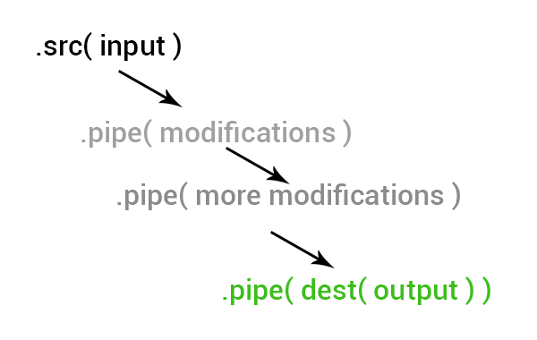

Gulp JS
The streaming build system
What it is ?
Javascript task runner in Node environment,
Which creating a build process for HTML, JS, CSS and Other assets

So, What exactly it does ?

Compile preprocessors
Compile preprocessors like Sass/LESS/Typescript/PUG/Babel
Optimizing assets
Optimizing assets like CSS, JavaScript, and images
Spinning up a web server
It can run a local server and run your files

Live reload
Reloading the browser automatically whenever a file is saved

So, What exactly it does ?
- Compile preprocessors like Sass/LESS/Typescript/PUG/Babel
- Optimizing assets like CSS, JavaScript, and images
- Spinning up a web server
- Reloading the browser automatically whenever a file is saved
Step 1
Check Node and npm is installed
node --version
npm --version
If node js and npm not installed, Install from here
Step 2
Install Gulp and check the version
npm install gulp -g
npm install gulp --save-dev
gulp --version
Step 3
Create 'gulpfile.js' in the same npm directory
var gulp = require('gulp');
gulp.task('hello', function() {
console.log('Hello Zell');
});
That's It! Run
Now you've created a simple gulp task, which runs the task cb()
Gulp Task
Step 1: Install Dependencies
For every tasks, you need to install appropriate plugins
For a Sass to CSS compression, we need install gulp-sass
npm install gulp-sass --save-dev
Step 2: Add Task in Gulpfile.js
Define a task name and assign a function to run it using gulp.task()
var gulp = require('gulp');
// Requires the gulp-sass plugin
var sass = require('gulp-sass');
gulp.task('sass', function(){
return gulp.src('app/scss/styles.scss')
.pipe(sass()) // Converts Sass to CSS
.pipe(gulp.dest('app/css'))
});
Gulp Task - Core
Inside every tasks following core process should happen.
src() -> pipe() -> dest()

Example for preprocessor
Check how the core flow (src > pipe > dest) is working here
var gulp = require('gulp');
// Requires the gulp-sass plugin
var sass = require('gulp-sass');
gulp.task('sass', function(){
return gulp.src('app/scss/styles.scss') // Input
.pipe(sass()) // Modification: Converts Sass to CSS
.pipe(gulp.dest('app/css')) // Output
});
Multiple Tasks
var gulp = require('gulp');
var imagemin = require('gulp-imagemin');
var less = require('gulp-less');
gulp.task('less', function(){
return gulp.src('./test.less')
.pipe(less())
.pipe(gulp.dest('dist/css'))
});
gulp.task('images', function(){
return gulp.src('./out/**/*.+(png|jpg|gif|svg)')
.pipe(imagemin())
.pipe(gulp.dest('dist/images'))
});
gulp.task('watch', function(){
gulp.watch('./test.less', gulp.series(['less']));
});
gulp.task('default', gulp.parallel('images', 'less') );
Gulp Watch
This method helps to watch the changes in given files and process the given tasks.
gulp.task('watch', function(){
gulp.watch('./test.less', gulp.series(['less']));
});
gulp.series() used to assign the list of tasks in gulp watch
Gulp default
This method helps to run all the given tasks in gulp.parallal() .
gulp.task('default', gulp.parallel('images', 'less') );
gulp.parallel() used to assign the list of tasks in gulp default
Run with Watch or default
// Default
gulp
// Watch
gulp watch
Useful Plugins
npm install gulp-less --save-dev
gulp-sass, gulp-less, gulp-postcss //css preprocessors
gulp-csso //css minify
gulp-autoprefixer // css autoprefixer
gulp-cssnano // combine multiple css files to single
gulp-uglify // minify js
gulp-browserify // js es6 support
gulp-concat // combine multiple js files to single
gulp-inject // Inject js into html
gulp-minify-html // minify html
gulp-imagemin // minify images
gulp-sharp // resize images
gulp-webserver // Run web server
browser-sync // Run live update
LESS
You need use `gulp-less` plugin for gulp less convertion and `gulp-clean-css` for minify css
# CLI
npm install gulp-less gulp-clean-css --save-dev
# Gulpfile.js
var less = require('gulp-less');
var cleanCSS = require('gulp-clean-css');
gulp.task('less', function(){
return gulp.src('./test.less')
.pipe(less())
.pipe(cleanCSS({compatibility: 'ie8'}))
.pipe(gulp.dest('public/dist/css'))
});
gulp.task('default', gulp.series( 'less') );
# CLI
gulp
Javascript
You can use `gulp-browserify` plugin for gulp js convertion and `gulp-concat` for combine js
# CLI
npm install gulp-browserify gulp-concat --save-dev
# Gulpfile.js
var browserify = require('gulp-browserify');
var concat = require('gulp-concat');
let uglify = require('gulp-uglify-es').default;
gulp.task("uglify", function () {
return gulp.src(['./test-1.js', './test-2.js'])
.pipe(concat('./test.js'))
.pipe(browserify({
insertGlobals : true,
debug : true
}))
.pipe(uglify())
.pipe(gulp.dest("public/dist/js"));
});
gulp.task('default', gulp.series( 'uglify') );
# CLI
gulp
Images
You can use `gulp-imagemin` plugin for image compressions
# CLI
npm install gulp-imagemin --save-dev
# Gulpfile.js
var imagemin = require('gulp-imagemin');
gulp.task('images', function(){
return gulp.src('./out/**/*.+(png|jpg|gif|svg)')
.pipe(imagemin())
.pipe(gulp.dest('public/dist/images'))
});
gulp.task('default', gulp.series( 'images') );
# CLI
gulp
Web Server
You need use `gulp-webserver` plugin for gulp web server
# CLI
npm install gulp-webserver --save-dev
# Gulpfile.js
var server = require('gulp-webserver');
gulp.task('server', function() {
gulp.src('./public/') // Your app folder
.pipe(server({
fallback: './public/index.html',
livereload: true,
open: true
}));
});
gulp.task('default', gulp.series( 'server') );
# CLI
gulp
Time for Excercise
- Download source zip file for the Excercise
- Install Node, npm and gulp globally
- Setup npm in your project
- Setup Gulp in your project and create gruntfile.js
- Create tasks for LESS Compile, JS Compile and Image compression
- Run and Explore more with gulp plugins :)
Presentation By
Narendran S